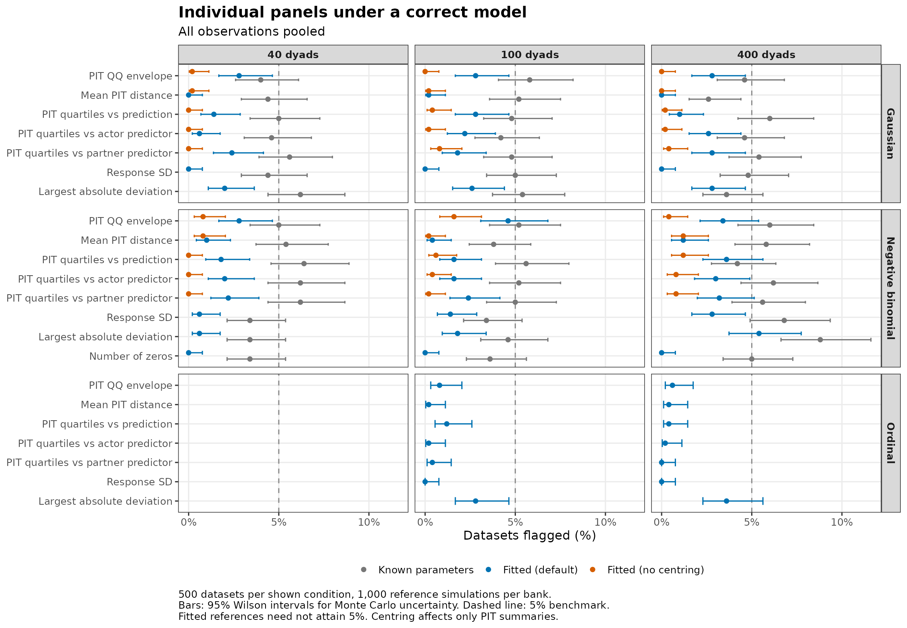
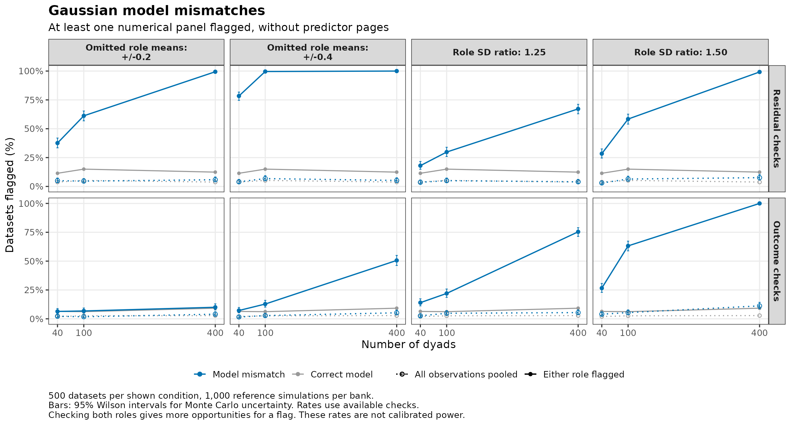
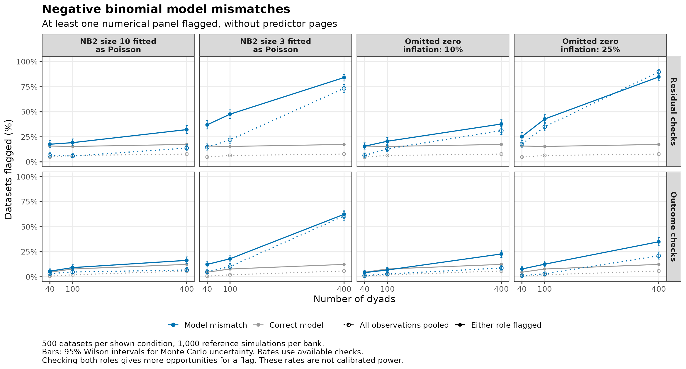

Residual and outcome distribution checks
Source:vignettes/articles/distribution-checks.Rmd
distribution-checks.RmdSummary
The study uses 500 datasets per condition and 1,000 reference simulations per dataset.
- Single panels rarely flag a correct model, but flags add up. Each panel flagged at most 7% of datasets under correct models, pooled or within one role, and at most 9% in either role (flagged in at least one role). In the settings studied, at least one flag appeared in 5–13% of datasets with all observations pooled, 12–28% in either role, and 16–36% in either role with actor and partner predictor pages. So look for a consistent pattern, not any single flag.
- Detection depends strongly on sample size. With 40 dyads, most mismatches were hard to detect: apart from omitted role means of ±0.4 (79%), mismatches were flagged in either role in 18–43% of datasets, against 16–19% under correct models. With 400 dyads, most were flagged in 84–100%. Mildly overdispersed counts (NB2 size 10) fitted as Poisson were flagged in only 40%, and 10% extra zeros in 46%, against 21–28% under correct models.
- Each problem shows in a few panels, listed in the help under Reading flags. At 400 dyads in either role, for example, 25% extra zeros flagged the QQ envelope in 76% of datasets but the number of zeros in 26%, and an omitted partner effect (dyad SD 1.2) flagged the PIT quartiles across the partner’s predictor in 88% but the QQ envelope in 5%. Panels suggest possible problems, not their cause.
- A flag, or its absence, does not show whether estimates or SEs are wrong. Harm depended on the kind of mismatch. At 400 dyads, omitted role means of ±0.4 were flagged in either role in 100% of datasets, yet actor and partner intervals covered 95–96% (predictors were distributed alike in both roles). NB2 size 10 fitted as Poisson lowered coverage to 92–93% but was flagged in only 40%. After a flag, fit the model the pattern suggests and compare the estimates and SEs you report.
- Centring adds a few false alarms, helps detect some mismatches, and makes others harder to detect. Median centring, which moves each dataset’s PIT residuals so that their median is 0.5, is applied automatically when the model has a freely estimated overall location (not for ordinal models). It raised the residual check’s flag rate by 3–10 percentage points under correct models and by up to 33 under mismatches, mainly omitted role means and extra zeros. But centred residuals lose any overall median shift, so single panels can flag less often. With NB2 size 1 fitted as Poisson, the residual check flagged up to 19 percentage points less often (see Effect of median centring).
What these plots compare
check_dyad_residuals() compares probability integral
transform (PIT) residuals with model simulations. A PIT residual ranks
an observed outcome from 0 (low) to 1 (high) among its simulated values.
check_dyad_outcomes() compares distributions and summaries
on the outcome scale. We study how often their numerical panels flag
correct Gaussian, negative-binomial, and ordinal models, and how often
they detect selected model mismatches. Both checks use the same
datasets, fitted models, and complete reference
simulations.
We compare pooling all observations with checking the two partner roles separately. We also compare the default residual check with the same calculation without median centring. This isolates the adjustment’s effect because both versions use identical PIT randomization.
A flag means that an observed single value, such as the response SD, falls strictly outside its simulated 95% limits, or a curve leaves its global envelope (a band built so that a correct model’s whole curve stays inside in a nominal 95% of datasets). An any flag rate (a union of flags) counts datasets with at least one flagged numerical panel. Unless noted, it leaves out the predictor pages. Rates with predictor pages add the PIT quartiles across the actor’s and the partner’s predictor. A flag in either role counts once. Neither multiple panels nor multiple roles have a joint 5% error rate. The ECDF display and the ordinal category ranges are excluded from these rates.
These are descriptive checks. Fitting can make a panel flag a correct model less often (conservative) or more often (liberal) than 5%, and more flags under a mismatch do not alone establish a better check. Compare detection with the correct-model results. This focused study does not validate other families, missing-data patterns, or every form of dependence. The partner-dependence study evaluates omitted partner correlation, and the covariance-pooling study evaluates differences between dyad compositions.
Study design and interpretation
The main conditions use 40, 100, or 400 complete dyads, each containing roles A and B. Standard-normal predictors correlate 0.3 between partners. Actor and partner effects are 0.5 and 0.3. A shared normal dyad intercept has SD 0.6. Gaussian outcomes have intercept 1 and residual SD 1. Negative-binomial (NB2) outcomes use a log link, intercept log(3), and conditional variance , where is the size parameter.
Gaussian mismatches either omit role shifts of ±0.2 or ±0.4, or impose a common residual SD when the true role SD ratio is 1.25 or 1.50. The variance conditions keep the average residual variance at 1. Count mismatches either fit a Poisson model to negative-binomial outcomes with size 10 or 3, or omit an extra-zero probability of 0.10 or 0.25 from a negative-binomial model. One feature changes at a time. The count mean before adding extra zeros is adjusted to preserve the overall conditional expectation. The settings table below records the baseline size and fitted family.
Correct Gaussian and negative-binomial models are also run with dyad SD 1.2 at 100 and 400 dyads. With the same dyad SD and sample sizes, three severe mismatches distort inference (see below). Correct five-category ordinal models use 100 and 400 dyads. Their latent outcome is the Gaussian model’s predictors and dyad intercept without the intercept 1, scaled by , plus standard logistic noise, cut into categories of about 10/20/40/20/10%. Two Gaussian longitudinal conditions use 100 dyads and six occasions, with either a correct mean model or omitted role shifts of ±0.2. They add an independent stationary AR(1) process for each person, with SD 0.6 and lag-one correlation 0.5, and independent residual noise with SD 0.8. The fitted model includes the shared dyad intercept and the person-specific AR(1) process.
Reference simulations redraw all random effects while keeping predictors and model parameters fixed. Models are not refitted within the reference simulations. For correct Gaussian and negative-binomial models, a separate reference bank uses the true generating parameters, without PIT centring. These known-parameter checks are run even when fitting fails. They distinguish the behavior of the reference calculation from the effects of estimating parameters.
Every dataset is checked with all observations pooled and with the
two roles separately, each with a page for the actor’s and the partner’s
predictor. Residual panels include the QQ envelope, mean PIT distance,
and the PIT quartiles across predicted outcomes and across each
predictor. The PIT quartiles use the default bins, so the study does not
cover quartile_lines = "qgam". Outcome panels include the
response SD (after subtracting fixed-effect predictions), largest
absolute deviation, number of zeros where available, and, for ordinal
outcomes, the category ranges.
Rates use available checks. Failed fits, convergence or Hessian problems, and failed checks are recorded and excluded without retry. Known-parameter and fitted-reference rates can therefore have different denominators. Bars show 95% Wilson intervals for Monte Carlo uncertainty. Counts and uncertainty are reported following the guidance of Morris et al. (2019).
The report reads saved CSV files and does not fit models. See the study code, plot code, and study notes.
| Generated family | Setting | Role shift (±) | SD ratio | NB2 size | Extra-zero probability | Fitted family | Dyad SD | Occasions | Dyads |
|---|---|---|---|---|---|---|---|---|---|
| Gaussian | Correct model | 0.0 | 1.00 | NA | 0.00 | gaussian | 0.6 | 1 | 40 / 100 / 400 |
| Gaussian | Omitted role means: +/-0.2 | 0.2 | 1.00 | NA | 0.00 | gaussian | 0.6 | 1 | 40 / 100 / 400 |
| Gaussian | Omitted role means: +/-0.4 | 0.4 | 1.00 | NA | 0.00 | gaussian | 0.6 | 1 | 40 / 100 / 400 |
| Gaussian | Role SD ratio: 1.25 | 0.0 | 1.25 | NA | 0.00 | gaussian | 0.6 | 1 | 40 / 100 / 400 |
| Gaussian | Role SD ratio: 1.50 | 0.0 | 1.50 | NA | 0.00 | gaussian | 0.6 | 1 | 40 / 100 / 400 |
| Gaussian | Correct model | 0.0 | 1.00 | NA | 0.00 | gaussian | 1.2 | 1 | 100 / 400 |
| Gaussian | Omitted partner effect | 0.0 | 1.00 | NA | 0.00 | gaussian | 1.2 | 1 | 100 / 400 |
| Gaussian | Residual SD rises with actor predictor | 0.0 | 1.00 | NA | 0.00 | gaussian | 1.2 | 1 | 100 / 400 |
| Gaussian | Correct model | 0.0 | 1.00 | NA | 0.00 | gaussian | 0.6 | 6 | 100 |
| Gaussian | Omitted role means: +/-0.2 | 0.2 | 1.00 | NA | 0.00 | gaussian | 0.6 | 6 | 100 |
| Negative binomial | Correct model | 0.0 | 1.00 | 3 | 0.00 | nbinom2 | 0.6 | 1 | 40 / 100 / 400 |
| Negative binomial | NB2 size 10 fitted as Poisson | 0.0 | 1.00 | 10 | 0.00 | poisson | 0.6 | 1 | 40 / 100 / 400 |
| Negative binomial | NB2 size 3 fitted as Poisson | 0.0 | 1.00 | 3 | 0.00 | poisson | 0.6 | 1 | 40 / 100 / 400 |
| Negative binomial | Omitted zero inflation: 10% | 0.0 | 1.00 | 3 | 0.10 | nbinom2 | 0.6 | 1 | 40 / 100 / 400 |
| Negative binomial | Omitted zero inflation: 25% | 0.0 | 1.00 | 3 | 0.25 | nbinom2 | 0.6 | 1 | 40 / 100 / 400 |
| Negative binomial | Correct model | 0.0 | 1.00 | 3 | 0.00 | nbinom2 | 1.2 | 1 | 100 / 400 |
| Negative binomial | NB2 size 1 fitted as Poisson | 0.0 | 1.00 | 1 | 0.00 | poisson | 1.2 | 1 | 100 / 400 |
| Ordinal | Correct model | 0.0 | 1.00 | NA | 0.00 | ordinal | 0.6 | 1 | 100 / 400 |
Correct models
Each row below is one numerical panel with all observations pooled. Grey points use known parameters, blue points use the fitted model with the package defaults, and orange points omit PIT centring. The dashed line marks 5% as a benchmark, not a guaranteed fitted-model flag rate. The outcome summaries do not depend on PIT centring, and ordinal PIT residuals are never centred.

With known parameters, the limits come from the model that generated the data, so each panel should flag at most about 5% of datasets. Across all 246 known-parameter rates, the average is 4.9%. This checks the implementation. It is not a finding about fitted references.
With fitted models and all observations pooled, the response SD, number of zeros, and mean PIT distance flag in at most 2.8%, 0.0%, and 1.2% of datasets. The fitted model already matches these overall levels.
Reading every numerical panel of both checks for both roles, without the predictor pages, at least one flag appears in 12–28% of datasets under every correct model. With all observations pooled, this is 5–13%.
Any flags under correct models
The table shows the main conditions. Correct ordinal, dyad SD 1.2, and six-occasion models are under Additional designs and exclusions. The table counts any numerical flag within each check, or across both checks. The latter is a union within each dataset, not a sum of the two rates. Role-based rates count either role, and their additional comparisons can increase the rate. Each entry gives the percentage, its 95% Wilson interval, and the denominator.
| Family | Setting | Dyads | View | Check | Any flag | With predictor pages |
|---|---|---|---|---|---|---|
| Gaussian | Correct model | 40 | Pooled | Residuals | 3.8% (2.4–5.9), n = 500 | 5.6% (3.9–8.0), n = 500 |
| Gaussian | Correct model | 40 | Pooled | Outcomes | 2.0% (1.1–3.6), n = 500 | 2.0% (1.1–3.6), n = 500 |
| Gaussian | Correct model | 40 | Pooled | Both checks | 5.8% (4.1–8.2), n = 500 | 7.6% (5.6–10.3), n = 500 |
| Gaussian | Correct model | 40 | Either role | Residuals | 11.4% (8.9–14.5), n = 500 | 16.2% (13.2–19.7), n = 500 |
| Gaussian | Correct model | 40 | Either role | Outcomes | 6.4% (4.6–8.9), n = 500 | 6.4% (4.6–8.9), n = 500 |
| Gaussian | Correct model | 40 | Either role | Both checks | 16.0% (13.0–19.5), n = 500 | 20.6% (17.3–24.4), n = 500 |
| Gaussian | Correct model | 100 | Pooled | Residuals | 5.2% (3.6–7.5), n = 500 | 7.8% (5.8–10.5), n = 500 |
| Gaussian | Correct model | 100 | Pooled | Outcomes | 2.6% (1.5–4.4), n = 500 | 2.6% (1.5–4.4), n = 500 |
| Gaussian | Correct model | 100 | Pooled | Both checks | 7.6% (5.6–10.3), n = 500 | 10.0% (7.7–12.9), n = 500 |
| Gaussian | Correct model | 100 | Either role | Residuals | 15.0% (12.1–18.4), n = 500 | 19.8% (16.5–23.5), n = 500 |
| Gaussian | Correct model | 100 | Either role | Outcomes | 6.2% (4.4–8.7), n = 500 | 6.2% (4.4–8.7), n = 500 |
| Gaussian | Correct model | 100 | Either role | Both checks | 19.6% (16.4–23.3), n = 500 | 24.2% (20.7–28.1), n = 500 |
| Gaussian | Correct model | 400 | Pooled | Residuals | 3.8% (2.4–5.9), n = 500 | 8.8% (6.6–11.6), n = 500 |
| Gaussian | Correct model | 400 | Pooled | Outcomes | 2.8% (1.7–4.6), n = 500 | 2.8% (1.7–4.6), n = 500 |
| Gaussian | Correct model | 400 | Pooled | Both checks | 6.4% (4.6–8.9), n = 500 | 11.2% (8.7–14.3), n = 500 |
| Gaussian | Correct model | 400 | Either role | Residuals | 12.4% (9.8–15.6), n = 500 | 19.2% (16.0–22.9), n = 500 |
| Gaussian | Correct model | 400 | Either role | Outcomes | 9.2% (7.0–12.1), n = 500 | 9.2% (7.0–12.1), n = 500 |
| Gaussian | Correct model | 400 | Either role | Both checks | 20.6% (17.3–24.4), n = 500 | 27.2% (23.5–31.3), n = 500 |
| Negative binomial | Correct model | 40 | Pooled | Residuals | 4.8% (3.2–7.0), n = 500 | 7.6% (5.6–10.3), n = 500 |
| Negative binomial | Correct model | 40 | Pooled | Outcomes | 0.6% (0.2–1.7), n = 500 | 0.6% (0.2–1.7), n = 500 |
| Negative binomial | Correct model | 40 | Pooled | Both checks | 5.2% (3.6–7.5), n = 500 | 8.0% (5.9–10.7), n = 500 |
| Negative binomial | Correct model | 40 | Either role | Residuals | 15.8% (12.9–19.3), n = 500 | 20.6% (17.3–24.4), n = 500 |
| Negative binomial | Correct model | 40 | Either role | Outcomes | 4.6% (3.1–6.8), n = 500 | 4.6% (3.1–6.8), n = 500 |
| Negative binomial | Correct model | 40 | Either role | Both checks | 18.8% (15.6–22.5), n = 500 | 23.6% (20.1–27.5), n = 500 |
| Negative binomial | Correct model | 100 | Pooled | Residuals | 6.4% (4.6–8.9), n = 500 | 9.8% (7.5–12.7), n = 500 |
| Negative binomial | Correct model | 100 | Pooled | Outcomes | 2.0% (1.1–3.6), n = 500 | 2.0% (1.1–3.6), n = 500 |
| Negative binomial | Correct model | 100 | Pooled | Both checks | 8.2% (6.1–10.9), n = 500 | 11.4% (8.9–14.5), n = 500 |
| Negative binomial | Correct model | 100 | Either role | Residuals | 15.4% (12.5–18.8), n = 500 | 22.8% (19.3–26.7), n = 500 |
| Negative binomial | Correct model | 100 | Either role | Outcomes | 7.8% (5.8–10.5), n = 500 | 7.8% (5.8–10.5), n = 500 |
| Negative binomial | Correct model | 100 | Either role | Both checks | 22.2% (18.8–26.0), n = 500 | 28.8% (25.0–32.9), n = 500 |
| Negative binomial | Correct model | 400 | Pooled | Residuals | 7.8% (5.8–10.5), n = 500 | 12.2% (9.6–15.4), n = 500 |
| Negative binomial | Correct model | 400 | Pooled | Outcomes | 5.8% (4.1–8.2), n = 500 | 5.8% (4.1–8.2), n = 500 |
| Negative binomial | Correct model | 400 | Pooled | Both checks | 13.2% (10.5–16.4), n = 500 | 17.2% (14.1–20.8), n = 500 |
| Negative binomial | Correct model | 400 | Either role | Residuals | 17.4% (14.3–21.0), n = 500 | 26.8% (23.1–30.8), n = 500 |
| Negative binomial | Correct model | 400 | Either role | Outcomes | 12.4% (9.8–15.6), n = 500 | 12.4% (9.8–15.6), n = 500 |
| Negative binomial | Correct model | 400 | Either role | Both checks | 27.6% (23.9–31.7), n = 500 | 35.8% (31.7–40.1), n = 500 |
Detecting model mismatches
The plots count any numerical flag for each default check. Solid lines count a flag in either role, while dotted lines pool all observations. These are different sets of comparisons, so the role-based check may flag more often even under a correct model. Grey lines repeat the correct-model rate of the same check and view, the false-alarm baseline.

Pooled outcome checks flag at most 11% of datasets under these Gaussian mismatches and at most 3% under the correct model. The fitted model already reproduces the pooled SD, so pooled outcome summaries have little to detect.

The tables show how often each panel flags each mismatch in either role, as percentages of datasets at 40 / 100 / 400 dyads with the package defaults. The correct-model column is the false-alarm baseline.
| Panel | Correct model | Omitted role means: +/-0.2 | Omitted role means: +/-0.4 | Role SD ratio: 1.25 | Role SD ratio: 1.50 |
|---|---|---|---|---|---|
| PIT QQ envelope | 7 / 7 / 6 | 31 / 54 / 99 | 75 / 99 / 100 | 9 / 12 / 36 | 13 / 28 / 92 |
| Mean PIT distance | 2 / 4 / 3 | 5 / 4 / 4 | 5 / 3 / 4 | 7 / 19 / 58 | 17 / 45 / 99 |
| PIT quartiles vs prediction | 5 / 8 / 5 | 16 / 39 / 84 | 44 / 96 / 100 | 7 / 8 / 10 | 7 / 11 / 24 |
| PIT quartiles vs actor predictor | 6 / 8 / 6 | 18 / 39 / 84 | 45 / 96 / 100 | 8 / 9 / 12 | 7 / 13 / 26 |
| PIT quartiles vs partner predictor | 4 / 6 / 5 | 17 / 40 / 85 | 46 / 95 / 100 | 7 / 8 / 10 | 5 / 9 / 26 |
| Response SD | 1 / 0 / 0 | 1 / 0 / 2 | 3 / 8 / 47 | 5 / 13 / 71 | 16 / 52 / 100 |
| Largest absolute deviation | 6 / 6 / 9 | 6 / 7 / 8 | 4 / 6 / 8 | 11 / 15 / 24 | 19 / 36 / 54 |
| Panel | Correct model | NB2 size 10 fitted as Poisson | NB2 size 3 fitted as Poisson | Omitted zero inflation: 10% | Omitted zero inflation: 25% |
|---|---|---|---|---|---|
| PIT QQ envelope | 9 / 9 / 8 | 9 / 9 / 13 | 22 / 22 / 54 | 7 / 10 / 27 | 13 / 25 / 76 |
| Mean PIT distance | 5 / 5 / 6 | 8 / 8 / 17 | 18 / 28 / 74 | 3 / 4 / 6 | 5 / 8 / 22 |
| PIT quartiles vs prediction | 6 / 4 / 9 | 7 / 8 / 11 | 14 / 16 / 25 | 8 / 11 / 17 | 14 / 26 / 52 |
| PIT quartiles vs actor predictor | 6 / 7 / 9 | 8 / 11 / 12 | 15 / 17 / 24 | 9 / 9 / 15 | 13 / 22 / 57 |
| PIT quartiles vs partner predictor | 6 / 8 / 9 | 7 / 8 / 11 | 14 / 15 / 27 | 7 / 9 / 15 | 12 / 20 / 54 |
| Response SD | 2 / 5 / 6 | 3 / 5 / 5 | 5 / 5 / 11 | 2 / 3 / 4 | 2 / 4 / 8 |
| Largest absolute deviation | 3 / 6 / 9 | 3 / 6 / 7 | 5 / 5 / 9 | 3 / 5 / 6 | 5 / 6 / 12 |
| Number of zeros | 2 / 2 / 3 | 2 / 3 / 9 | 7 / 13 / 56 | 1 / 2 / 17 | 2 / 6 / 26 |
The main patterns, at 100 / 400 dyads in either role unless noted:
- Omitted role means show mainly in the role view of residual checks (±0.2: 61% / 99%). The pooled residual view and the outcome checks’ numerical panels (not the ECDF) stay near their correct-model rates (5% / 6% versus 5% / 4%, and 7% / 10% versus 6% / 9%). The exception is the per-role response SD at ±0.4 (8% / 47%), which reacts to the inflated fitted residual SD.
- Role SD differences show most in the per-role response SD and mean PIT distance (ratio 1.50: 52% / 100% and 45% / 99%).
- NB2 overdispersion fitted as Poisson is partly absorbed by a larger fitted dyad SD (see below). Residual checks flag either role in 48% / 84% of datasets for size 3, compared with 15% / 17% under the correct model.
- Omitted zero inflation shows most in the PIT QQ envelope and the PIT quartiles (25% extra zeros: 25% / 76% for QQ and 26% / 52% across predicted outcomes). The number of zeros stays weak (6% / 26%) because a smaller fitted NB2 size absorbs the extra zeros (see below).
What the fitted models estimate
A fitted model can absorb part of a mismatch into its estimates (medians over usable fits). The data have dyad SD 0.6 and, for Gaussian outcomes, average residual variance 1.
At 400 dyads, omitted role means of ±0.4 give a residual SD of 1.15, compared with 1.00 under the correct model. Poisson fits to NB2 data with size 3 give a dyad SD of 0.72, compared with 0.59 under the correct count model. With 25% omitted zero inflation, the NB2 size is 0.63, compared with 3.00 (a smaller size means more overdispersion).
Are mismatches that distort estimates or SEs detected?
Each fitted model gives 95% Wald intervals for the actor (0.5) and partner (0.3) effects. Coverage is the percentage of intervals that contain the true value and should be near 95%. The SE ratio divides the average SE by the SD of the estimates. Below 1, the SEs are too small. Low coverage with an SE ratio near 1 means the estimates are biased. Flagged is the percentage of datasets with any flag in either check and either role, without and with actor and partner predictor pages.
Three severe mismatches distort inference. Omitting the partner effect biases the actor effect. A residual SD that rises with the actor predictor, exp(actor − 1), makes the actor SE too small, and Poisson fits to NB2 outcomes with size 1 make both SEs too small. These settings use 100 / 400 dyads and dyad SD 1.2. The correct Gaussian and negative-binomial models with the same dyad SD give their false-alarm rates.
| Family | Setting | Actor coverage (%) | Partner coverage (%) | Actor SE ratio | Partner SE ratio | Flagged (%) | With pages (%) |
|---|---|---|---|---|---|---|---|
| Gaussian | Correct model | 93 / 95 | 94 / 94 | 0.96 / 1.02 | 0.96 / 0.96 | 18 / 23 | 26 / 28 |
| Gaussian | Omitted partner effect | 79 / 43 | – / – | 1.00 / 0.94 | – / – | 24 / 51 | 50 / 91 |
| Gaussian | Residual SD rises with actor predictor | 77 / 76 | 94 / 96 | 0.57 / 0.60 | 0.97 / 1.00 | 76 / 98 | 81 / 99 |
| Negative binomial | Correct model | 94 / 94 | 96 / 95 | 0.99 / 0.95 | 1.03 / 0.97 | 20 / 22 | 26 / 29 |
| Negative binomial | NB2 size 1 fitted as Poisson | 81 / 74 | 78 / 77 | 0.64 / 0.55 | 0.61 / 0.59 | 64 / 100 | 70 / 100 |
At 400 dyads in either role, a residual SD rising with the actor predictor flagged the largest absolute deviation in 98% of datasets, mean PIT distance in 77%, the PIT quartiles across the actor’s predictor in 54%, and the QQ envelope in 55%.
The main mismatches, at 40 / 100 / 400 dyads:
| Family | Setting | Actor coverage (%) | Partner coverage (%) | Actor SE ratio | Partner SE ratio | Flagged (%) | With pages (%) |
|---|---|---|---|---|---|---|---|
| Gaussian | Correct model | 93 / 94 / 95 | 95 / 95 / 95 | 0.98 / 1.00 / 1.00 | 0.99 / 1.03 / 1.04 | 16 / 20 / 21 | 21 / 24 / 27 |
| Gaussian | Omitted role means: +/-0.2 | 93 / 96 / 93 | 95 / 95 / 96 | 0.93 / 1.03 / 0.94 | 0.97 / 1.02 / 0.97 | 40 / 64 / 99 | 48 / 73 / 100 |
| Gaussian | Omitted role means: +/-0.4 | 95 / 93 / 96 | 96 / 96 / 95 | 0.96 / 0.97 / 1.02 | 1.04 / 1.02 / 1.00 | 79 / 100 / 100 | 85 / 100 / 100 |
| Gaussian | Role SD ratio: 1.25 | 94 / 97 / 95 | 96 / 94 / 94 | 0.99 / 1.05 / 1.02 | 0.99 / 0.97 / 1.00 | 26 / 41 / 84 | 32 / 47 / 86 |
| Gaussian | Role SD ratio: 1.50 | 96 / 95 / 95 | 94 / 94 / 95 | 1.03 / 1.02 / 1.00 | 0.95 / 0.94 / 0.97 | 43 / 77 / 100 | 45 / 79 / 100 |
| Negative binomial | Correct model | 94 / 94 / 95 | 93 / 94 / 96 | 0.94 / 1.00 / 0.95 | 0.94 / 0.97 / 1.01 | 19 / 22 / 28 | 24 / 29 / 36 |
| Negative binomial | NB2 size 10 fitted as Poisson | 91 / 91 / 92 | 92 / 91 / 93 | 0.89 / 0.93 / 0.87 | 0.88 / 0.87 / 0.91 | 22 / 26 / 40 | 28 / 34 / 50 |
| Negative binomial | NB2 size 3 fitted as Poisson | 87 / 87 / 86 | 86 / 87 / 89 | 0.76 / 0.77 / 0.74 | 0.77 / 0.79 / 0.79 | 42 / 54 / 91 | 50 / 59 / 94 |
| Negative binomial | Omitted zero inflation: 10% | 96 / 95 / 96 | 96 / 96 / 97 | 1.06 / 1.02 / 1.02 | 1.06 / 1.00 / 1.01 | 18 / 26 / 46 | 26 / 32 / 55 |
| Negative binomial | Omitted zero inflation: 25% | 96 / 98 / 98 | 95 / 97 / 96 | 1.05 / 1.15 / 1.10 | 1.07 / 1.10 / 1.08 | 29 / 48 / 88 | 37 / 56 / 93 |
Effect of median centring
At 400 dyads, the largest drop in a single panel’s flag rate after centring is 65.4 percentage points, for the “PIT QQ envelope” panel under “NB2 size 1 fitted as Poisson” (pooled). There, the residual check’s any flag rate is 95.8% without centring and 76.6% with it.
Additional designs and exclusions
The extra conditions check stronger dyad dependence, ordinal outcomes, and one longitudinal model. They extend the main conditions without covering all dependence structures.
| Family | Setting | Dyads | View | Check | Any flag | With predictor pages |
|---|---|---|---|---|---|---|
| Gaussian | Correct model, dyad SD 1.2 | 100 | Pooled | Residuals | 4.4% (2.9–6.6), n = 500 | 8.8% (6.6–11.6), n = 500 |
| Gaussian | Correct model, dyad SD 1.2 | 100 | Pooled | Outcomes | 2.4% (1.4–4.1), n = 500 | 2.4% (1.4–4.1), n = 500 |
| Gaussian | Correct model, dyad SD 1.2 | 100 | Pooled | Both checks | 6.8% (4.9–9.4), n = 500 | 11.2% (8.7–14.3), n = 500 |
| Gaussian | Correct model, dyad SD 1.2 | 100 | Either role | Residuals | 12.0% (9.4–15.1), n = 500 | 20.2% (16.9–23.9), n = 500 |
| Gaussian | Correct model, dyad SD 1.2 | 100 | Either role | Outcomes | 7.2% (5.2–9.8), n = 500 | 7.2% (5.2–9.8), n = 500 |
| Gaussian | Correct model, dyad SD 1.2 | 100 | Either role | Both checks | 18.4% (15.2–22.0), n = 500 | 25.8% (22.2–29.8), n = 500 |
| Gaussian | Correct model, dyad SD 1.2 | 400 | Pooled | Residuals | 4.6% (3.1–6.8), n = 500 | 9.0% (6.8–11.8), n = 500 |
| Gaussian | Correct model, dyad SD 1.2 | 400 | Pooled | Outcomes | 3.0% (1.8–4.9), n = 500 | 3.0% (1.8–4.9), n = 500 |
| Gaussian | Correct model, dyad SD 1.2 | 400 | Pooled | Both checks | 7.4% (5.4–10.0), n = 500 | 11.8% (9.3–14.9), n = 500 |
| Gaussian | Correct model, dyad SD 1.2 | 400 | Either role | Residuals | 14.8% (12.0–18.2), n = 500 | 21.0% (17.7–24.8), n = 500 |
| Gaussian | Correct model, dyad SD 1.2 | 400 | Either role | Outcomes | 8.2% (6.1–10.9), n = 500 | 8.2% (6.1–10.9), n = 500 |
| Gaussian | Correct model, dyad SD 1.2 | 400 | Either role | Both checks | 22.8% (19.3–26.7), n = 500 | 28.0% (24.2–32.1), n = 500 |
| Gaussian | Correct model, six occasions | 100 | Pooled | Residuals | 4.8% (3.2–7.0), n = 483 | 9.5% (7.2–12.5), n = 483 |
| Gaussian | Correct model, six occasions | 100 | Pooled | Outcomes | 2.9% (1.7–4.8), n = 483 | 2.9% (1.7–4.8), n = 483 |
| Gaussian | Correct model, six occasions | 100 | Pooled | Both checks | 7.5% (5.4–10.1), n = 483 | 12.2% (9.6–15.4), n = 483 |
| Gaussian | Correct model, six occasions | 100 | Either role | Residuals | 12.8% (10.1–16.1), n = 483 | 23.4% (19.8–27.4), n = 483 |
| Gaussian | Correct model, six occasions | 100 | Either role | Outcomes | 6.0% (4.2–8.5), n = 483 | 6.0% (4.2–8.5), n = 483 |
| Gaussian | Correct model, six occasions | 100 | Either role | Both checks | 18.6% (15.4–22.3), n = 483 | 27.5% (23.7–31.7), n = 483 |
| Gaussian | Omitted role means: +/-0.2, six occasions | 100 | Pooled | Residuals | 3.8% (2.5–5.9), n = 498 | 8.6% (6.5–11.4), n = 498 |
| Gaussian | Omitted role means: +/-0.2, six occasions | 100 | Pooled | Outcomes | 4.0% (2.6–6.1), n = 498 | 4.0% (2.6–6.1), n = 498 |
| Gaussian | Omitted role means: +/-0.2, six occasions | 100 | Pooled | Both checks | 7.6% (5.6–10.3), n = 498 | 11.8% (9.3–15.0), n = 498 |
| Gaussian | Omitted role means: +/-0.2, six occasions | 100 | Either role | Residuals | 99.8% (98.9–100.0), n = 498 | 100.0% (99.2–100.0), n = 498 |
| Gaussian | Omitted role means: +/-0.2, six occasions | 100 | Either role | Outcomes | 7.6% (5.6–10.3), n = 498 | 7.6% (5.6–10.3), n = 498 |
| Gaussian | Omitted role means: +/-0.2, six occasions | 100 | Either role | Both checks | 99.8% (98.9–100.0), n = 498 | 100.0% (99.2–100.0), n = 498 |
| Negative binomial | Correct model, dyad SD 1.2 | 100 | Pooled | Residuals | 5.2% (3.6–7.5), n = 500 | 10.2% (7.8–13.2), n = 500 |
| Negative binomial | Correct model, dyad SD 1.2 | 100 | Pooled | Outcomes | 2.2% (1.2–3.9), n = 500 | 2.2% (1.2–3.9), n = 500 |
| Negative binomial | Correct model, dyad SD 1.2 | 100 | Pooled | Both checks | 7.4% (5.4–10.0), n = 500 | 12.0% (9.4–15.1), n = 500 |
| Negative binomial | Correct model, dyad SD 1.2 | 100 | Either role | Residuals | 16.2% (13.2–19.7), n = 500 | 23.0% (19.5–26.9), n = 500 |
| Negative binomial | Correct model, dyad SD 1.2 | 100 | Either role | Outcomes | 5.0% (3.4–7.3), n = 500 | 5.0% (3.4–7.3), n = 500 |
| Negative binomial | Correct model, dyad SD 1.2 | 100 | Either role | Both checks | 19.6% (16.4–23.3), n = 500 | 26.0% (22.3–30.0), n = 500 |
| Negative binomial | Correct model, dyad SD 1.2 | 400 | Pooled | Residuals | 6.8% (4.9–9.4), n = 500 | 9.6% (7.3–12.5), n = 500 |
| Negative binomial | Correct model, dyad SD 1.2 | 400 | Pooled | Outcomes | 3.4% (2.1–5.4), n = 500 | 3.4% (2.1–5.4), n = 500 |
| Negative binomial | Correct model, dyad SD 1.2 | 400 | Pooled | Both checks | 10.2% (7.8–13.2), n = 500 | 13.0% (10.3–16.2), n = 500 |
| Negative binomial | Correct model, dyad SD 1.2 | 400 | Either role | Residuals | 15.2% (12.3–18.6), n = 500 | 24.0% (20.5–27.9), n = 500 |
| Negative binomial | Correct model, dyad SD 1.2 | 400 | Either role | Outcomes | 7.6% (5.6–10.3), n = 500 | 7.6% (5.6–10.3), n = 500 |
| Negative binomial | Correct model, dyad SD 1.2 | 400 | Either role | Both checks | 21.8% (18.4–25.6), n = 500 | 29.4% (25.6–33.5), n = 500 |
| Ordinal | Correct model | 100 | Pooled | Residuals | 2.2% (1.2–3.9), n = 500 | 2.8% (1.7–4.6), n = 500 |
| Ordinal | Correct model | 100 | Pooled | Outcomes | 2.8% (1.7–4.6), n = 500 | 2.8% (1.7–4.6), n = 500 |
| Ordinal | Correct model | 100 | Pooled | Both checks | 5.0% (3.4–7.3), n = 500 | 5.6% (3.9–8.0), n = 500 |
| Ordinal | Correct model | 100 | Either role | Residuals | 6.2% (4.4–8.7), n = 500 | 10.2% (7.8–13.2), n = 500 |
| Ordinal | Correct model | 100 | Either role | Outcomes | 7.4% (5.4–10.0), n = 500 | 7.4% (5.4–10.0), n = 500 |
| Ordinal | Correct model | 100 | Either role | Both checks | 12.4% (9.8–15.6), n = 500 | 15.8% (12.9–19.3), n = 500 |
| Ordinal | Correct model | 400 | Pooled | Residuals | 1.4% (0.7–2.9), n = 500 | 1.6% (0.8–3.1), n = 500 |
| Ordinal | Correct model | 400 | Pooled | Outcomes | 3.6% (2.3–5.6), n = 500 | 3.6% (2.3–5.6), n = 500 |
| Ordinal | Correct model | 400 | Pooled | Both checks | 5.0% (3.4–7.3), n = 500 | 5.2% (3.6–7.5), n = 500 |
| Ordinal | Correct model | 400 | Either role | Residuals | 9.0% (6.8–11.8), n = 500 | 14.6% (11.8–18.0), n = 500 |
| Ordinal | Correct model | 400 | Either role | Outcomes | 8.2% (6.1–10.9), n = 500 | 8.2% (6.1–10.9), n = 500 |
| Ordinal | Correct model | 400 | Either role | Both checks | 15.8% (12.9–19.3), n = 500 | 21.2% (17.8–25.0), n = 500 |
At 100 dyads, the role view of residual checks flags omitted role means of ±0.2 in 100% of datasets with six occasions (correct model: 13%), compared with 61% with one occasion. Six occasions give each role six times as many rows.
For correct ordinal models, at least one category fell outside its range in 0% / 0% of datasets pooled and 2% / 4% in either role (100 / 400 dyads).
More than 2% of fits had errors or problems in: Gaussian, Correct model, 100 dyads, six occasions (17 of 500). Their rates use the remaining datasets.
In the longitudinal correct model, the 17 fits with problems estimated a residual SD of at most 0.004. Six occasions separate the person-level AR(1) process from independent noise only weakly. The known-parameter rates there still use all 500 datasets.
Complete saved results
The saved summary table contains every recorded panel, category, and role, with denominators and Monte Carlo standard errors. The fit table records availability and median fitted estimates for every condition, and the inference table the actor and partner bias, SEs, and coverage. The paired table records how often only the centred version, only the uncentred version, both, or neither flagged the same dataset.
Why not use DHARMa directly?
DHARMa
supports mixed models, but its residual tests, such as the uniformity
and outlier tests, assume independent residuals. When random effects are
redrawn, partners’ residuals stay correlated, so these tests’ error
rates need not hold, as DHARMa’s help also notes. With DHARMa’s default
since version 0.5.0, random effects keep their fitted values. If they
absorb all residual variation, as in APIMs fitted with
dispformula = ~ 0, the simulations reproduce the data
almost exactly. With random effects redrawn, grouping by dyad
(recalculateResiduals(group = dyad)) sums each dyad’s
observed and simulated values, which is valid but lets role differences
cancel. Selecting one role (sel) is valid for
cross-sectional dyads but not for repeated measures. The
rotation option needs the full residual covariance, which
for non-Gaussian models usually must be estimated, imprecisely, from the
simulations. dyadMLM instead builds each panel’s reference from whole
simulated datasets, which keep the fitted partner and time dependence.
This study did not compare the two approaches.
Limitations
- Predictors were distributed alike in both roles. When predictor means differ by role, omitted role means can bias actor and partner effects, so their good coverage here need not hold.
- Actor and partner effects were the same in both roles, so the study does not show how well the panels reveal role-specific effects.
- The panels were chosen with earlier runs of these scenarios. This run uses new seeds, but the panels may detect other mismatches less well than these.
- No heavy-tailed residuals, gross outliers, or data errors were simulated, so the study does not show whether panels such as the QQ plot and the largest absolute deviation reveal them.